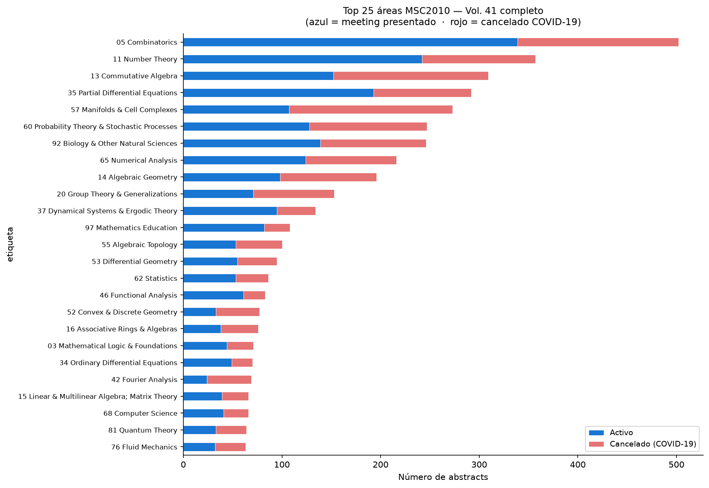
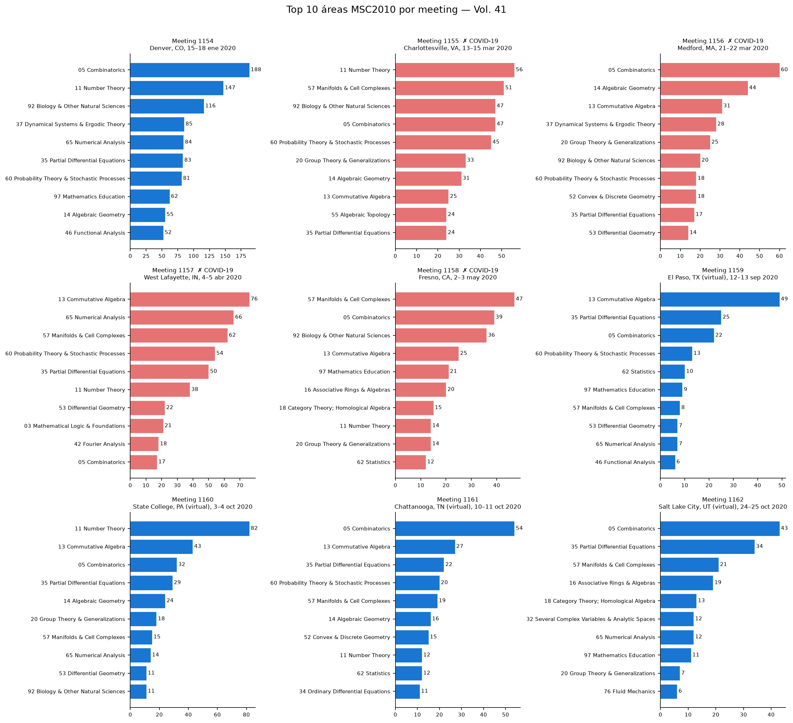
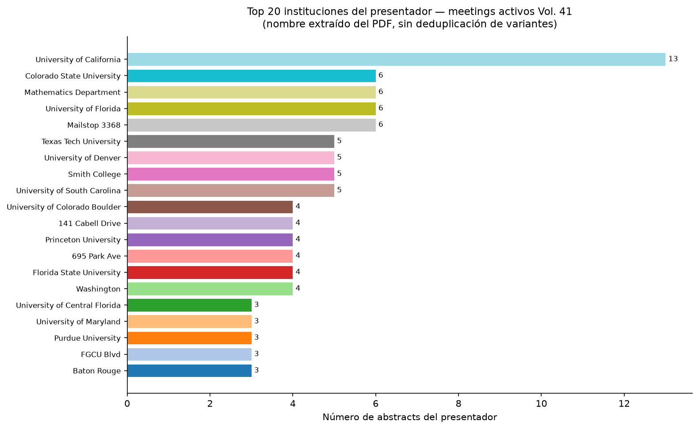
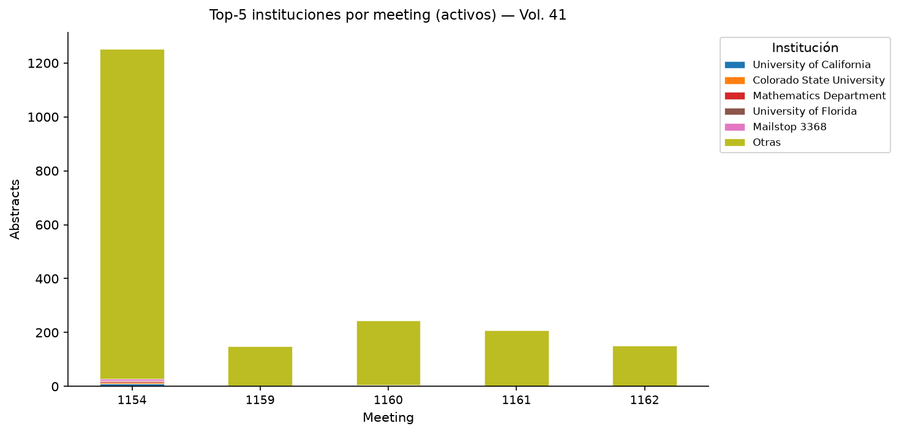
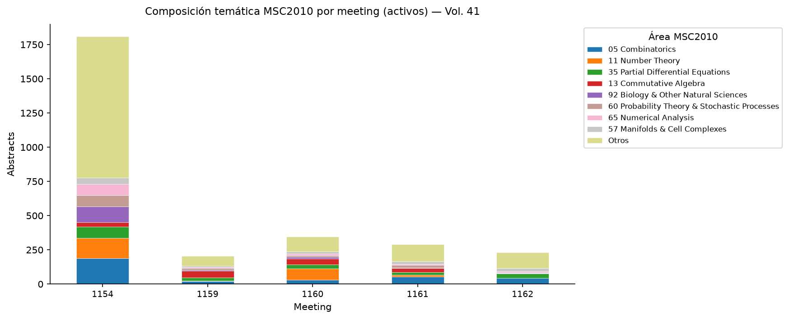
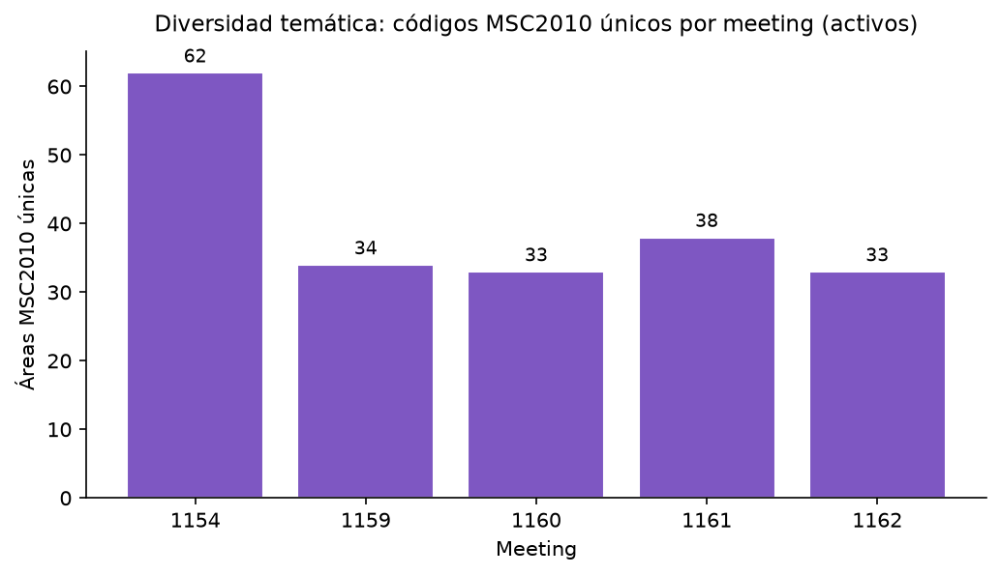
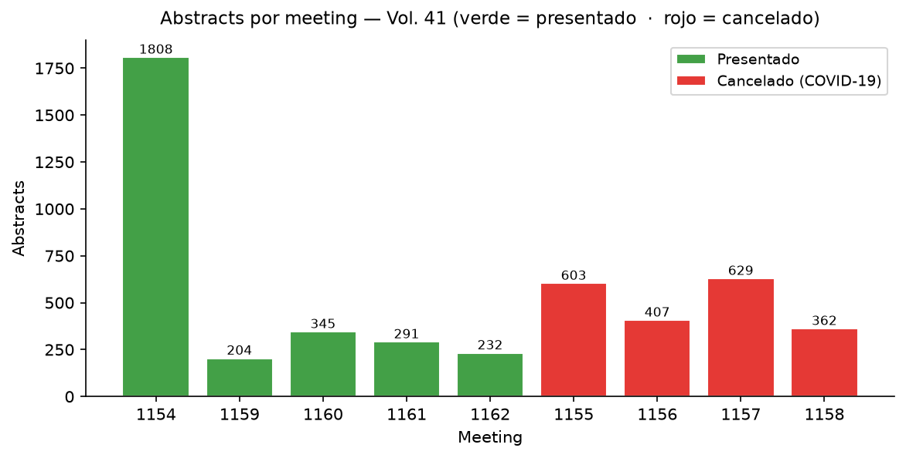

Indicadores
2,880
Abstracts en meetings
presentados
presentados
62
Áreas MSC2010 únicas
(meetings activos)
(meetings activos)
1.8%
Abstracts en Top-5 inst.
(meetings activos)
(meetings activos)
41.0%
Abstracts en meetings
cancelados (COVID-19)
cancelados (COVID-19)
Meetings analizados
| Meeting # | Nombre | Lugar | Fechas | Abstracts | Áreas MSC | Estado |
|---|---|---|---|---|---|---|
| 1154 | Joint Mathematics Meetings | Denver, CO | 15–18 ene 2020 | 1808 | 62 | Presentado |
| 1155 | Spring Eastern Sectional | Charlottesville, VA | 13–15 mar 2020 | 603 | — | Cancelado COVID-19 |
| 1156 | Spring Eastern Sectional | Medford, MA | 21–22 mar 2020 | 407 | — | Cancelado COVID-19 |
| 1157 | Spring Central Sectional | West Lafayette, IN | 4–5 abr 2020 | 629 | — | Cancelado COVID-19 |
| 1158 | Spring Western Sectional | Fresno, CA | 2–3 may 2020 | 362 | — | Cancelado COVID-19 |
| 1159 | Fall Central Virtual Sectional | El Paso, TX (virtual) | 12–13 sep 2020 | 204 | 34 | Presentado |
| 1160 | Fall Eastern Virtual Sectional | State College, PA (virtual) | 3–4 oct 2020 | 345 | 33 | Presentado |
| 1161 | Fall Southeastern Virtual Sectional | Chattanooga, TN (virtual) | 10–11 oct 2020 | 291 | 38 | Presentado |
| 1162 | Fall Western Virtual Sectional | Salt Lake City, UT (virtual) | 24–25 oct 2020 | 232 | 33 | Presentado |
Hallazgos
1Área dominante por tipo de evento. En la JMM Denver (meeting 1154, presencial), el área más frecuente fue 05 Combinatorics (188 abstracts, 10.4% del total del meeting). En los cuatro meetings virtuales post-COVID (1159–1162 agrupados), el área más frecuente fue 05 Combinatorics (151 abstracts, 14.1% del total de esos meetings).
2Institución más activa. Considerando los abstracts con institución identificada en los meetings presentados, University of California aparece en 13 abstracts (0.6% del total con institución). Nota: el nombre de institución proviene directamente del texto del PDF y no está deduplicado; variantes ortográficas cuentan por separado.
3Diversidad temática: presencial vs. virtual. La JMM Denver (meeting 1154) cubrió 62 áreas MSC2010 distintas, lo que refleja su carácter de reunión nacional amplia. Los meetings virtuales sectoriales mostraron menor diversidad: meeting 1159: 34 áreas, meeting 1160: 33 áreas, meeting 1161: 38 áreas, meeting 1162: 33 áreas. Esto es esperable dado que las reuniones seccionales se enfocan en regiones geográficas y temáticas más acotadas.
Gráficos







Limitaciones
- La afiliación extraída corresponde únicamente al presentador (autor marcado con *). La afiliación de los co-autores no se puede separar con fiabilidad del texto plano cuando hay múltiples autores.
- El nombre de institución se obtiene limpiando el texto libre de la afiliación. No está estandarizado: la misma universidad puede aparecer con distintas grafías. El script no aplica deduplicación. 1483 abstracts (30.4%) no tienen institución extraída.
- Los abstracts de los meetings 1155–1158 fueron publicados en el volumen 41 pero no fueron presentados (reuniones canceladas por COVID-19). Se muestran en la tabla de meetings y en el gráfico consolidado con color rojo, pero se excluyen de los indicadores de meetings activos y de los gráficos de instituciones.
pypdfextrae texto plano sin estructura de columnas. Fórmulas LaTeX, caracteres especiales y saltos de página pueden fragmentar nombres, afiliaciones o títulos. 9.8% de los abstracts no tienen email del presentador parseable.- El volumen 41 cubre exclusivamente el año 2020. Los resultados no son comparables con otros volúmenes sin normalizar por número de meetings y sesiones.
- 0.4% de los abstracts no tienen fecha “Received” parseable.